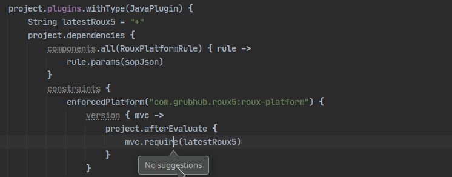
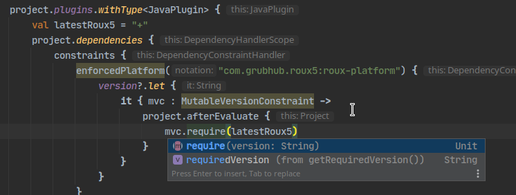

Gradle Plugins
About Me
John Burns
Staff Engineer @ GrubHub
CKUG Co-Organizer
 @wakingrufus
@wakingrufus
 @wakingrufus@mastodon.technology
@wakingrufus@mastodon.technology
About GrubHub
About You
Gradle Users
Plugin Authors
Terrified of Gradle
The Problem
The Goal
- Abstract away the complexity
- Simplify standard usage
- Without preventing customization
Maven vs Gradle
Maven
- Declarative via XML
- Extended with Plugins
Gradle
- DSL
- Extended with Plugins
DSL
plugins {
id "java"
id "jacoco"
}
repositories {
mavenCentral()
}
dependencies {
implementations("commons-io:commons-io:2.7")
testImplementation("org.junit.jupiter:junit-jupiter-api:5.4.+")
testRuntimeOnly("org.junit.jupiter:junit-jupiter-engine:5.4.+")
testImplementation("org.junit.jupiter:junit-jupiter-params:5.4.+")
testImplementation("org.assertj:assertj-core:3.23.1")
}
test {
useJUnitPlatform()
}
DSL
def isNonStable = { String version ->
def stableKeyword = ['RELEASE', 'FINAL', 'GA']
.any { it -> version.toUpperCase().contains(it) }
def regex = /^[0-9,.v-]+(-r)?$/
return !stableKeyword && !(version ==~ regex)
}
def excludeList = ["guice", "guava"]
tasks.named("dependencyUpdates").configure {
resolutionStrategy {
componentSelection {
all {
if (isNonStable(it.candidate.version)) {
reject('Release candidate')
} else if (excludeList.contains(it.candidate.module)){
reject('dependency excluded from upgrades')
}
}
}
}
}
DSL
plugins {
id "java"
id "jacoco"
id "com.myorg.gradle.depupdates"
}
Gradle lifecycle
Initialization
- buildSrc
- init scripts
- settings.gradle
Configuration
- Plugins
- Build scripts
Execution
- Tasks
Groovy or Kotlin?
Basic scripts: doesn't matter
Complex scripts: Groovy
Plugins: Kotlin
Groovy DSL
Kotlin DSL
Building Blocks
Tasks
Extensions
Plugins
Tasks
Workhorse of the Execution phase
Tasks
Inputs -> TaskAction -> Outputs
Tasks
abstract class MyTask : DefaultTask() {
@get:OutputFile
abstract val outputFile: Property<File>
@get:InputFile
abstract val inputFile: Property<File>
@TaskAction
fun doWork(){
outputFile.get().writeText(doThing(inputFile.get()))
}
}
Tasks
Companion Object
abstract class MyTask : DefaultTask() {
companion object {
@JvmStatic
fun create(project: Project,
taskName: String = "myTask"): MyTask {
return project.tasks.create<MyTask>(taskName).apply {
// TODO
}
}
}
}
Tasks
Companion Object
abstract class MyTask : DefaultTask() {
companion object {
@JvmStatic
fun create(project: Project,
taskName: String = "myTask"): MyTask {
return project.tasks.create<MyTask>(taskName).apply {
outputFile.set(input.map {
project.buildDir.resolve("$it.txt")
})
input.convention("name")
}
}
}
}
Tasks
Companion Object
abstract class MyTask : DefaultTask() {
companion object {
@JvmStatic
fun create(project: Project,
taskName: String = "myTask"): MyTask {
return project.tasks.create<MyTask>(taskName).apply {
outputs.upToDateWhen { false }
}
}
}
}
Tasks
Companion Object
abstract class MyTask : DefaultTask() {
companion object {
@JvmStatic
fun create(project: Project,
taskName: String = "myTask"): MyTask {
return project.tasks.create<MyTask>(taskName).apply {
project.extensions.findByType<MyExtension>()
?.input.set(it.myTaskOutputName)
}
}
}
}
Extensions
Exposing configuration to buildscripts
Extensions
open class MyExtension(objects: ObjectFactory) {
companion object {
@JvmStatic
fun create(project: Project): MyExtension {
return project.extensions.create<MyExtension>("my")
.apply { name.convention(project.rootProject.name) }
}
}
val name: Property<String> = objects.property(String::class.java)
fun name(newName: String) {
name.set(newName)
}
}
Extensions
Usage
my {
name("customName")
}
Plugins
Workhorse of the Configuration Phase
Plugins
class MyPlugin : Plugin<Project> {
override fun apply(project: Project) {
}
}
Plugins
Apply Tasks & Extensions
class MyPlugin : Plugin<Project> {
override fun apply(project: Project) {
val ext = MyExtension.create(project)
val task = MyTask.create(project)
}
}
Plugins
Apply Other Plugins
class MyPlugin : Plugin<Project> {
override fun apply(project: Project) {
project.pluginManager.apply(JavaPlugin::class.java)
}
}
Plugins
React to Other Plugins
class MyPlugin : Plugin<Project> {
override fun apply(project: Project) {
project.pluginManager.withType(JavaPlugin::class) {
project.repositories {
// configure custom repo
}
project.withConvention(JavaPluginConvention::class) {
sourceSets.create("customSourceSet"){
// configure custom source set
}
}
}
}
}
Best Practices
Avoid afterEvaluate
class MyPlugin : Plugin<Project> {
override fun apply(project: Project) {
val task = MyTask.create(project)
project.afterEvaluate {
project.tasks
.findByName("publishMavenJavaPublicationToMavenRepository")
.dependsOn(task)
}
}
}
Project Properties
- Use extension properties when used in task logic
- Do NOT read extension properties in plugin code
- Use project properties when used in plugin logic
Implementation
class MyPlugin : Plugin<Project> {
override fun apply(project: Project) {
if(!project.hasProperty("my.enabled")
|| project.property("my.enabled")){
// plugin code
}
}
}
Usage
gradle.properties
my.enabled=false
Command Line
./gradlew -Pmy.enabled=false
Testing
Testing
Unit Tests
- Programmatic access to Project model
- Good for checking configuration
- If you run tasks, run them directly
- Avoid causing dependencies to resolve
Testing
Unit Tests
val rootProject = ProjectBuilder.builder().build() as ProjectInternal
val subProject = ProjectBuilder.builder()
.withParent(rootProject)
.build() as ProjectInternal
subProject.plugins.apply(JavaPlugin::class.java)
subProject.plugins.apply(MyPlugin::class.java)
subProject.evaluate()
rootProject.evaluate()
assertThat(subProject.tasks.findByName("myTask")).isNotNull()
subProject.tasks.findByName("myTask").doWork()
Testing
Integration Tests
- Run a whole gradle build
- works on gradle scripts you write to a temp dir
- Pass in gradle version to use
- parameterize to test multiple gradle verisons
Testing
Integration Tests
rootProjectDir.resolve("build.gradle").apply {
createNewFile()
writeText("""plugins {
id("java")
id("com.myorg.myplugin")
}""".trimMargin()
)
}
val buildResult = GradleRunner.create()
.withProjectDir(rootProjectDir)
.withPluginClasspath()
.withArguments("build", "--stacktrace")
.withGradleVersion("7.5")
.forwardOutput().build()
assertThat(buildResult.task(":myTask")?.outcome).isEqualTo(SUCCESS)
Initialization Phase
- init scripts
- Settings Plugin
- Custom Wrapper Distribution
Initialization Phase
- pluginManagement (repo/plugins)
- Gradle Remote Build Cache